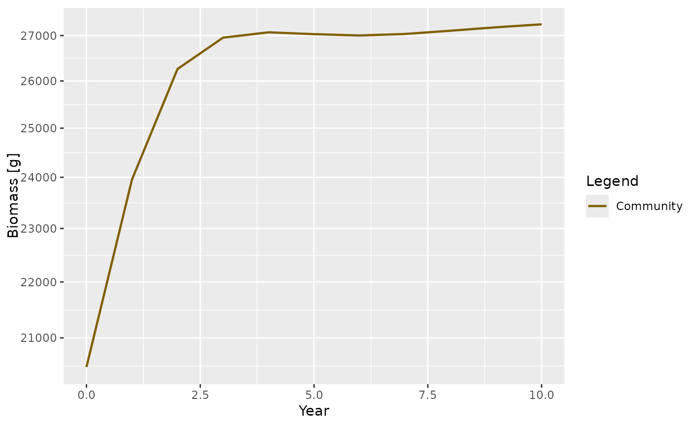
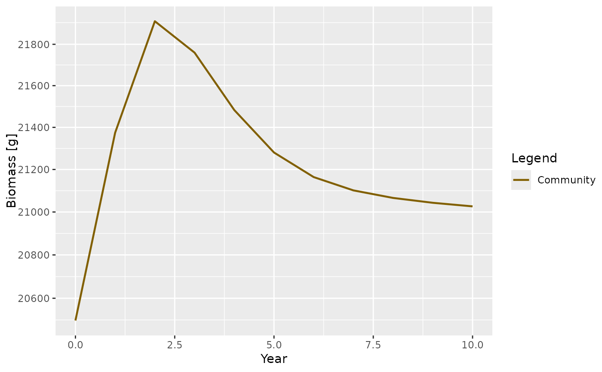
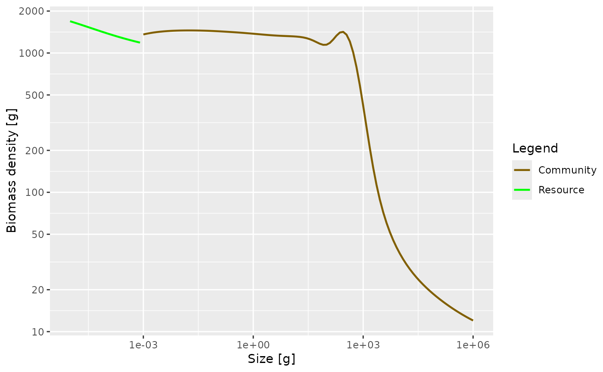

This functions creates a MizerParams object describing a
community-type model.
The function has many arguments, all of which have default values.
Usage
newCommunityParams(
max_w = 1e+06,
min_w = 0.001,
no_w = 100,
min_w_pp = 1e-10,
z0 = 0.1,
alpha = 0.2,
f0 = 0.7,
h = 10,
gamma = NA,
beta = 100,
sigma = 2,
n = 2/3,
kappa = 1000,
lambda = 2.05,
r_pp = 10,
knife_edge_size = 1000,
reproduction
)Arguments
- max_w
The maximum size of the community. The
w_maxof the species used to represent the community is set to this value.- min_w
The minimum size of the community.
- no_w
The number of size bins in the consumer spectrum.
- min_w_pp
The smallest size of the resource spectrum. By default this is set to the smallest value at which any of the consumers can feed.
- z0
The background mortality of the community.
- alpha
The assimilation efficiency of the community.
- f0
The average feeding level of individuals who feed on a power-law spectrum. This value is used to calculate the search rate parameter
gamma.- h
The coefficient of the maximum food intake rate.
- gamma
Volumetric search rate. Estimated using
h,f0andkappaif not supplied.- beta
The preferred predator prey mass ratio.
- sigma
The width of the prey preference.
- n
The allometric growth exponent. Used as allometric exponent for the maximum intake rate of the community as well as the intrinsic growth rate of the resource.
- kappa
The coefficient of the initial resource abundance power-law.
- lambda
Used to set power-law exponent for resource capacity if the
resource_capacityargument is given as a single number.- r_pp
![[Deprecated]](figures/lifecycle-deprecated.svg) . Use
. Use resource_rateargument instead.- knife_edge_size
The size at the edge of the knife-edge-selectivity function.
- reproduction
The constant reproduction in the smallest size class of the community spectrum. By default this is set so that the community spectrum is continuous with the resource spectrum.
Value
An object of type MizerParams
Details
A community model has several features that distinguish it from a multi-species model:
Species identities of individuals are ignored. All are aggregated into a single community.
The resource spectrum only extends to the start of the community spectrum.
Reproductive rate is constant, independent of the energy invested in reproduction, which is set to 0.
Standard metabolism is turned off (the parameter
ksis set to 0). Consequently, the growth rate is now determined solely by the assimilated food
Fishing selectivity is modelled as a knife-edge function with one parameter,
knife_edge_size, which determines the size at which species are
selected.
The resulting MizerParams object can be projected forward using
project() like any other MizerParams object. When projecting
the community model it may be necessary to keep a small time step size
dt of around 0.1 to avoid any instabilities with the solver. You can
check for these numerical instabilities by plotting the biomass or abundance
through time after the projection.
References
K. H. Andersen,J. E. Beyer and P. Lundberg, 2009, Trophic and individual efficiencies of size-structured communities, Proceedings of the Royal Society, 276, 109-114
See also
Other functions for setting up models:
newMultispeciesParams(),
newSingleSpeciesParams(),
newTraitParams()
Examples
params <- newCommunityParams()
sim <- project(params, t_max = 10)
plotBiomass(sim)

plotSpectra(sim, power = 2)
# More satiation. More mortality
params <- newCommunityParams(f0 = 0.8, z0 = 0.4)
sim <- project(params, t_max = 10)
plotBiomass(sim)

plotSpectra(sim, power = 2)
